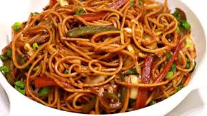

Chowmean

Description
Chow mein is a popular Chinese dish characterized by stir-fried noodles, typically made from wheat flour,
combined with a variety of vegetables, meat, or seafood. The noodles are stir-fried in a wok to achieve a
slightly crispy texture while maintaining a tender interior. Commonly featured ingredients include cabbage,
carrots, onions, bell peppers, and bean sprouts, along with options like chicken, beef, shrimp, or tofu.
Flavorful sauces such as soy sauce, oyster sauce, and sesame oil are used to season the dish, offering a balance
of savory and umami notes. Chow mein is beloved for its versatility and satisfying taste.
Ingredients To Make Chowmean
- Chowmein noodles are specifically used for this dish. They are typically made from wheat flour and egg
- Chicken (sliced thinly)
- Onions
- Carrots
- Cabbage
- Garlic
- Ginger
- Soy sauce
- Vinegar
- Oil
Steps Of Making Chowmean
- Prepare the ingredients: onions, carrots, cabbage, garlic, ginger, soy sauce, vinegar, oil.
- Cook Chow Mein noodles until al dente, then drain and set aside.
- Heat oil in a skillet or wok over medium-high heat.
- Stir-fry onions, carrots, and cabbage until slightly softened.
- Create space in the skillet and add minced garlic and ginger, stir-frying until fragrant.
- Combine vegetables and aromatics, then add cooked noodles to the skillet.
- Pour soy sauce and vinegar mixture over the noodles and vegetables.
- Toss everything together until noodles are coated and vegetables are evenly distributed.
- Taste and adjust seasoning if needed, adding more soy sauce or vinegar as desired.
- Serve hot, optionally garnishing with sliced green onions or sesame seeds.